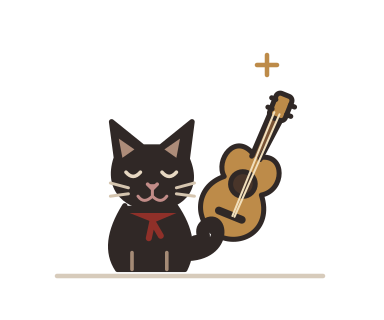
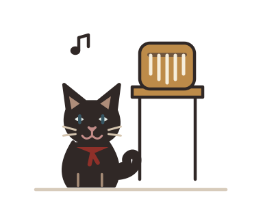

empty-lessons
직접 그린 SVG예요. 아이콘은 왼쪽부터 16 · 20 · 24px예요.

empty-lessons
empty-makeups
empty-payments

empty-students
app-icon
nav-home
홈 메뉴nav-lessons
수업 메뉴nav-makeups
보강 메뉴nav-payments
납부 메뉴nav-settings
설정 메뉴set-lesson-defaults
수업·수강료 기본값set-students
학생 관리set-attendance
출결·보강 설정set-messages
안내 문구 설정set-backup
백업과 복원set-data
데이터 관리camera
사진 넣기zoom-in
크게 보기zoom-out
작게 보기copy
복사message
문자 보내기stats
통계note
메모group
그룹 수업solo
1:1 레슨pause
잠시 쉬기leave
그만두기return
다시 다니기check-all
모두 출석ukulele
우쿨렐레kalimba
칼림바witch-hat
마녀 모자cat
고양이music-note
음표